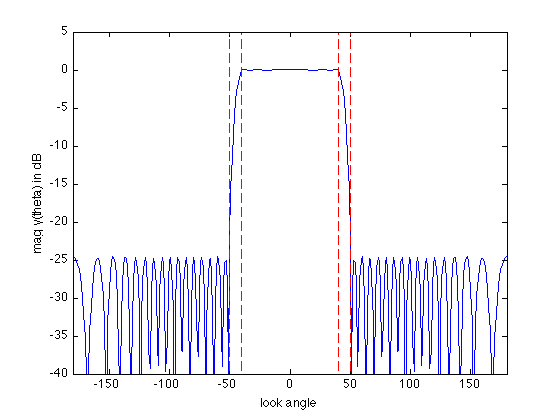

% "FIR Filter Design via Spectral Factorization and Convex Optimization" example % by S.-P. Wu, S. Boyd, and L. Vandenberghe % (figures are generated) % % Designs a uniform linear antenna array using spectral factorization method where: % - it minimizes sidelobe level outside the beamwidth of the pattern % - it has a constraint on the maximum ripple around unit gain in the beamwidth % % minimize max |y(theta)| for theta in the stop-beamwidth % s.t. 1/delta <= |y(theta)| <= delta for theta in the pass-beamwidth % % We first replace the look-angle variable theta with the "frequency" % variable omega, defined by omega = -2*pi*d/lambda*cos(theta). % This transforms the antenna pattern y(theta) into a standard discrete % Fourier transform of array weights w. Then we apply another change of % variables: we replace w with its auto-correlation coefficients r. % % Now the problem can be solved via spectral factorization approach: % % minimize max R(omega) for omega in the stopband % s.t. (1/delta)^2 <= R(omega) <= delta^2 for omega in the passband % R(omega) >= 0 for all omega % % where R(omega) is the squared magnitude of the y(theta) array response % (and the Fourier transform of the autocorrelation coefficients r). % Variables are coefficients r. delta is the allowed passband ripple. % This is a convex problem (can be formulated as an LP after sampling). % % Written for CVX by Almir Mutapcic 02/02/06 %******************************************************************** % problem specs: a uniform line array with inter-element spacing d % antenna element locations are at d*[0:n-1] % (the array pattern will be symmetric around origin) %******************************************************************** n = 20; % number of antenna elements lambda = 1; % wavelength d = 0.45*lambda; % inter-element spacing % passband direction from 30 to 60 degrees (30 degrees bandwidth) % transition band is 15 degrees on both sides of the passband theta_pass = 40; theta_stop = 50; % passband max allowed ripple ripple = 0.1; % in dB (+/- around the unit gain) %******************************************************************** % construct optimization data %******************************************************************** % number of frequency samples m = 30*n; % convert passband and stopband angles into omega frequencies omega_zero = -2*pi*d/lambda; omega_pass = -2*pi*d/lambda*cos(theta_pass*pi/180); omega_stop = -2*pi*d/lambda*cos(theta_stop*pi/180); omega_pi = +2*pi*d/lambda; % build matrix A that relates R(omega) and r, ie, R = A*r omega = linspace(-pi,pi,m)'; A = exp( -j*omega(:)*[1-n:n-1] ); % passband constraint matrix Ap = A(omega >= omega_zero & omega <= omega_pass,:); % stopband constraint matrix As = A(omega >= omega_stop & omega <= omega_pi,:); %******************************************************************** % formulate and solve the magnitude design problem %******************************************************************** cvx_begin variable r(2*n-1,1) complex % minimize stopband attenuation minimize( max( real( As*r ) ) ) subject to % passband ripple constraints (10^(-ripple/20))^2 <= real( Ap*r ) <= (10^(+ripple/20))^2; % nonnegative-real constraint for all frequencies % a bit redundant: the passband frequencies are already constrained real( A*r ) >= 0; % auto-correlation symmetry constraints imag(r(n)) == 0; r(n-1:-1:1) == conj(r(n+1:end)); cvx_end % check if problem was successfully solved if ~strfind(cvx_status,'Solved') return end % find antenna weights by computing the spectral factorization w = spectral_fact(r); % divided by 2 since this is in PSD domain min_sidelobe_level = 10*log10( cvx_optval ); fprintf(1,'The minimum sidelobe level is %3.2f dB.\n\n',... min_sidelobe_level); %******************************************************************** % plots %******************************************************************** % build matrix G that relates y(theta) and w, ie, y = G*w theta = [-180:180]'; G = kron( cos(pi*theta/180), [0:n-1] ); G = exp(2*pi*i*d/lambda*G); y = G*w; % plot array pattern figure(1), clf ymin = -40; ymax = 5; plot([-180:180], 20*log10(abs(y)), ... [theta_stop theta_stop],[ymin ymax],'r--',... [-theta_pass -theta_pass],[ymin ymax],'r--',... [-theta_stop -theta_stop],[ymin ymax],'r--',... [theta_pass theta_pass],[ymin ymax],'r--'); xlabel('look angle'), ylabel('mag y(theta) in dB'); axis([-180 180 ymin ymax]); % polar plot figure(2), clf zerodB = 50; dBY = 20*log10(abs(y)) + zerodB; plot(dBY.*cos(pi*theta/180), dBY.*sin(pi*theta/180), '-'); axis([-zerodB zerodB -zerodB zerodB]), axis('off'), axis('square') hold on plot(zerodB*cos(pi*theta/180),zerodB*sin(pi*theta/180),'k:') % 0 dB plot( (min_sidelobe_level + zerodB)*cos(pi*theta/180), ... (min_sidelobe_level + zerodB)*sin(pi*theta/180),'k:') % min level text(-zerodB,0,'0 dB') text(-(min_sidelobe_level + zerodB),0,sprintf('%0.1f dB',min_sidelobe_level)); plot([0 60*cos(theta_pass*pi/180)], [0 60*sin(theta_pass*pi/180)], 'k:') plot([0 60*cos(-theta_pass*pi/180)],[0 60*sin(-theta_pass*pi/180)],'k:') plot([0 60*cos(theta_stop*pi/180)], [0 60*sin(theta_stop*pi/180)], 'k:') plot([0 60*cos(-theta_stop*pi/180)],[0 60*sin(-theta_stop*pi/180)],'k:') hold off
Calling sedumi: 1171 variables, 40 equality constraints For improved efficiency, sedumi is solving the dual problem. ------------------------------------------------------------ SeDuMi 1.21 by AdvOL, 2005-2008 and Jos F. Sturm, 1998-2003. Alg = 2: xz-corrector, Adaptive Step-Differentiation, theta = 0.250, beta = 0.500 eqs m = 40, order n = 1172, dim = 1172, blocks = 1 nnz(A) = 46112 + 0, nnz(ADA) = 1600, nnz(L) = 820 it : b*y gap delta rate t/tP* t/tD* feas cg cg prec 0 : 1.70E+02 0.000 1 : -1.55E+00 3.14E+01 0.000 0.1847 0.9000 0.9000 3.28 1 1 7.8E+01 2 : -1.05E+00 9.72E+00 0.000 0.3097 0.9000 0.9000 1.93 1 1 1.5E+01 3 : -3.92E-01 5.10E+00 0.000 0.5247 0.9000 0.9000 3.47 1 1 3.4E+00 4 : -8.59E-02 1.91E+00 0.000 0.3750 0.9000 0.9000 2.80 1 1 6.1E-01 5 : -2.76E-02 7.88E-01 0.000 0.4118 0.9000 0.9000 1.72 1 1 2.0E-01 6 : -1.00E-02 2.80E-01 0.000 0.3557 0.9000 0.9000 1.26 1 1 6.7E-02 7 : -7.19E-03 1.88E-01 0.000 0.6722 0.9000 0.9000 1.08 1 1 4.5E-02 8 : -5.70E-03 1.35E-01 0.000 0.7150 0.9000 0.9000 1.05 1 1 3.3E-02 9 : -4.60E-03 8.70E-02 0.000 0.6462 0.9000 0.9000 1.02 1 1 2.2E-02 10 : -4.60E-03 5.54E-02 0.000 0.6370 0.9000 0.0000 1.00 1 1 1.9E-02 11 : -4.60E-03 3.35E-02 0.217 0.6049 0.9000 0.0000 1.01 1 1 1.8E-02 12 : -4.01E-03 1.42E-02 0.079 0.4226 0.9321 0.9000 1.01 1 1 1.2E-02 13 : -3.57E-03 2.73E-03 0.000 0.1930 0.9220 0.9000 1.01 1 1 4.5E-03 14 : -3.45E-03 7.77E-04 0.000 0.2843 0.9040 0.9000 1.00 1 1 1.4E-03 15 : -3.43E-03 1.50E-04 0.000 0.1933 0.9114 0.9000 1.00 1 1 3.1E-04 16 : -3.43E-03 2.12E-05 0.000 0.1410 0.9105 0.9000 1.00 1 1 5.1E-05 17 : -3.43E-03 2.75E-06 0.000 0.1300 0.9113 0.9000 1.00 1 1 7.7E-06 18 : -3.43E-03 1.36E-07 0.000 0.0494 0.9900 0.9637 1.00 1 1 iter seconds digits c*x b*y 18 0.3 Inf -3.4281467969e-03 -3.4281467969e-03 |Ax-b| = 1.9e-15, [Ay-c]_+ = 4.7E-16, |x|= 7.2e-01, |y|= 2.9e-01 Detailed timing (sec) Pre IPM Post 7.000E-02 2.900E-01 0.000E+00 Max-norms: ||b||=1, ||c|| = 1.023293e+00, Cholesky |add|=0, |skip| = 0, ||L.L|| = 1.79012. ------------------------------------------------------------ Status: Solved Optimal value (cvx_optval): +0.00342815 The minimum sidelobe level is -24.65 dB.
